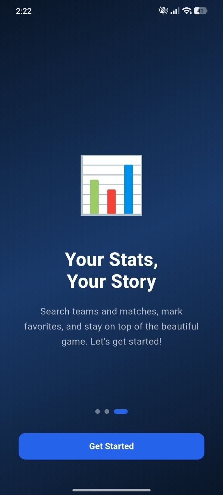
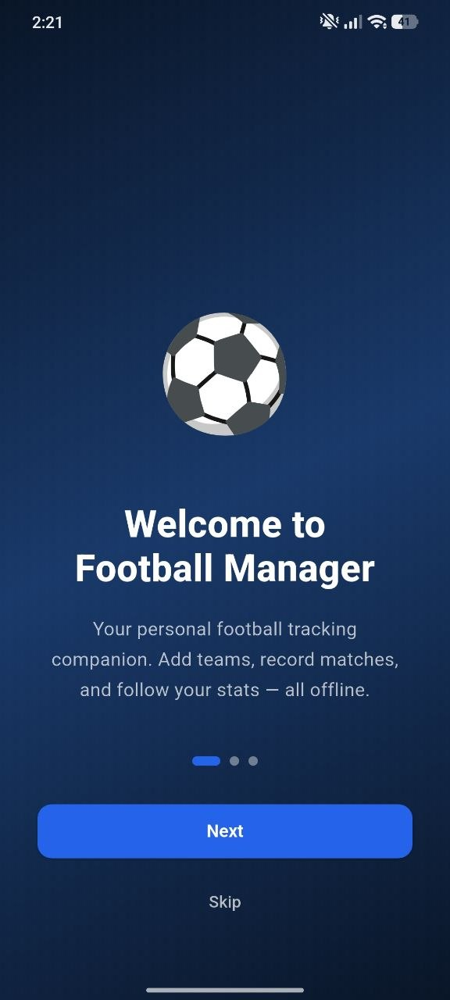
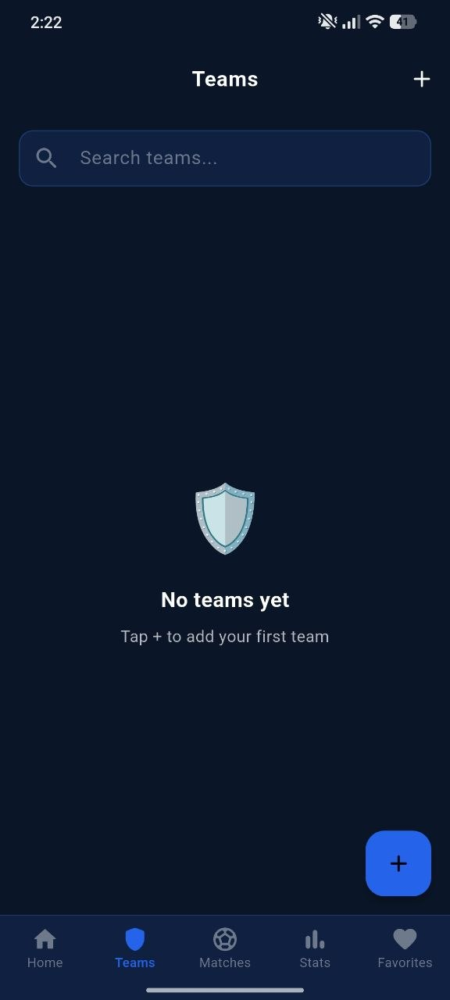
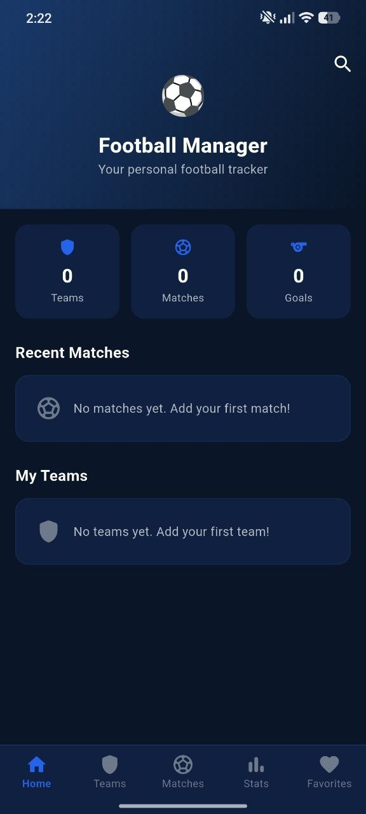
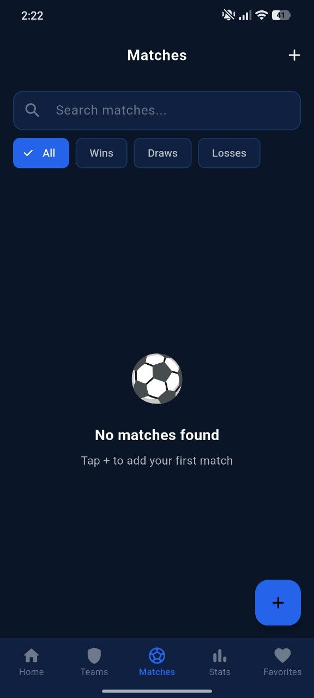
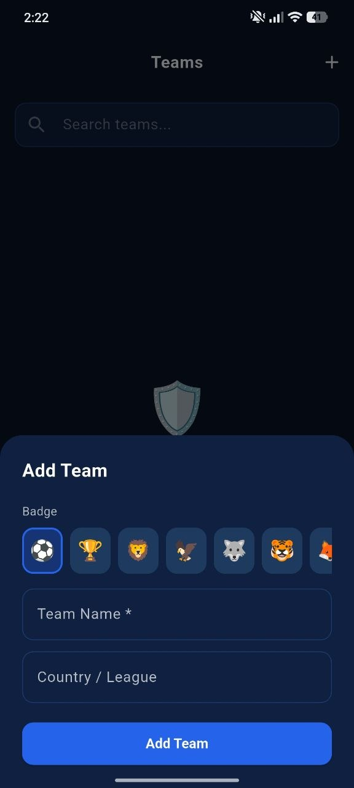
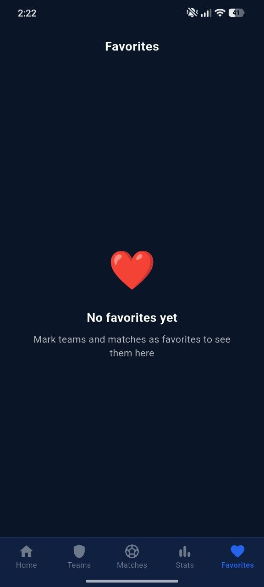
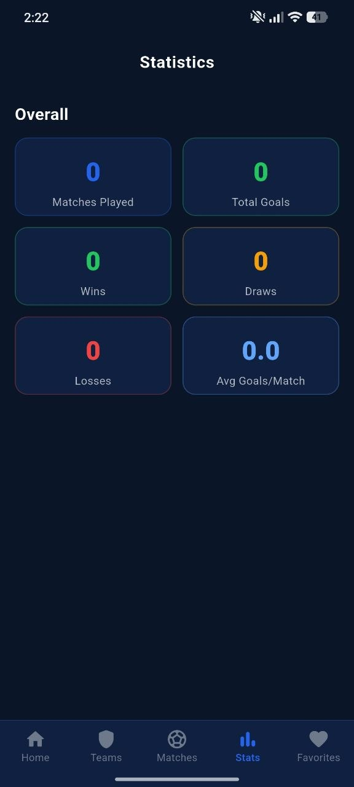

Personal football dashboard
A clear home screen gives you instant access to teams, matches and goals. It feels focused, fast and simple.
1w Football Tracker helps you manage football teams, record matches, follow goals, save favorites and read your football story through clean offline statistics.

The app focuses on simple daily use: add teams, record match history, check statistics and keep favorite teams or matches close.
A clear home screen gives you instant access to teams, matches and goals. It feels focused, fast and simple.
Create teams with badges, country or league details and keep your football archive organized.
Track matches played, goals, wins, draws, losses and average goals per match.
See your football profile, recent matches and team activity from one focused dashboard.
Add custom teams, select badges and keep your football structure organized without extra complexity.
Search matches, filter wins, draws or losses and find the exact record you need quickly.
Understand your progress with clear cards for goals, wins, draws and average performance.
Mark important teams and matches as favorites so your key football moments stay easy to access.
The app is designed as a free service and does not collect, store or share personal user data.
Browse the main screens through a premium animated carousel.







Add clubs, choose badges, save league details and keep your football world inside one offline tracker.
The statistics screen keeps everything readable and fast: matches played, wins, draws, losses, goals and average goals per match.
“Perfect for keeping small team records clean without complicated menus.”
Team organizer Local football group“The dark interface makes the app feel modern, serious and easy to use.”
Football fan Match tracker user“Favorites and simple stats are exactly what I need after each game.”
Casual player Weekend footballDownload 1w Football Tracker and keep teams, matches, stats and favorites organized in one private offline app.
Download on Google Play